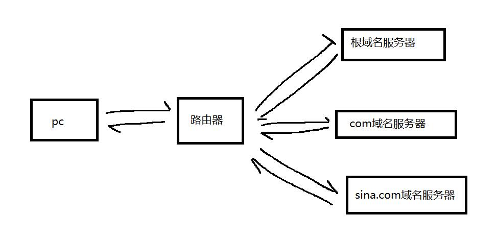
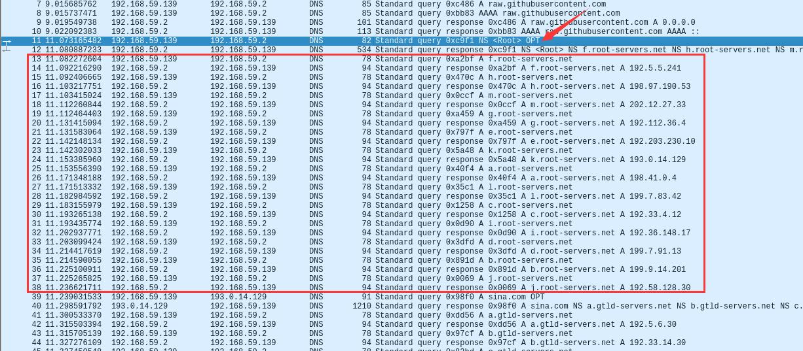
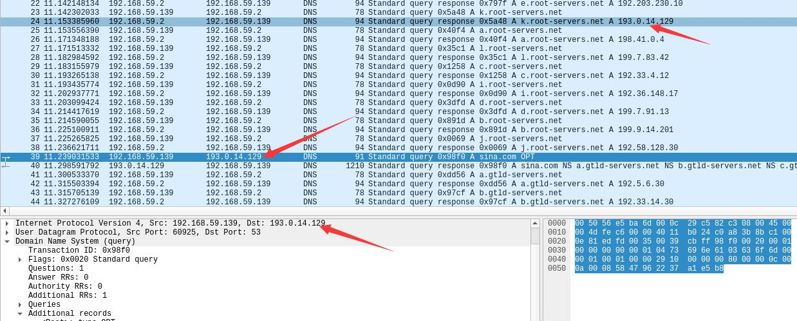
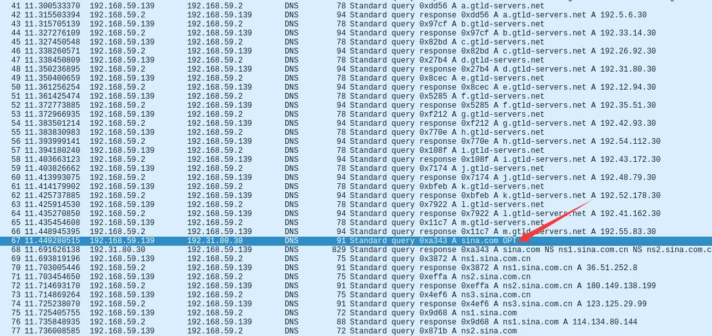
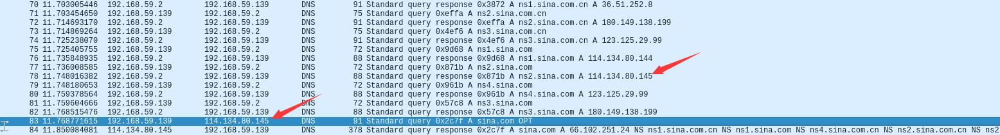
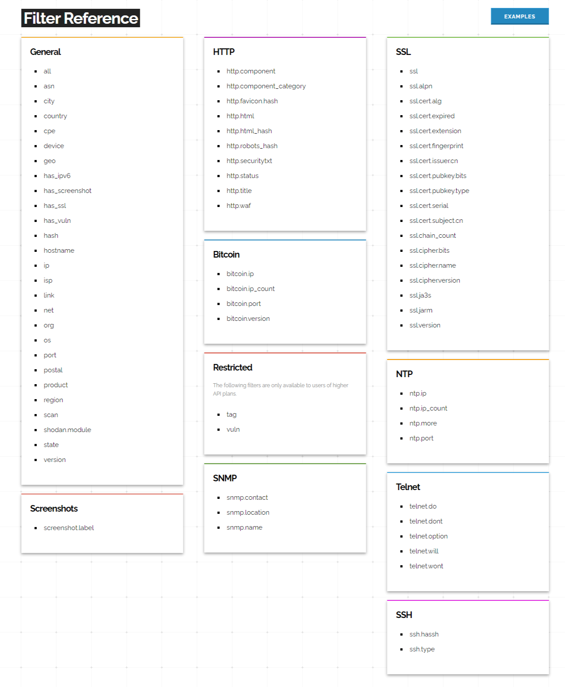

域名是什么
机器在网络层互通用的是IP，但是纯数字的IP难以记忆，为了方便使用，前辈们创造出了域名这个东西，用一串字符串代替IP地址，方便人们记忆和使用
sina.com
这就是域名
www.sina.com
这是完全限定域名，也叫FQDN，那个www是主机名
解析过程
但是这东西是要代替IP用的，所以前辈又整了个dns出来，也就是域名解析，把域名转换为对应IP

以普通家庭网为例，上图就是一个对新浪域名sina.com的完整dns解析的过程，pc在解析一个域名时会向dns服务器发出请求，一般pc的dns服务器就是家里的路由器，接下来会由路由器完成解析并返回结果给pc
路由器首先会向根域名服务器请求（全球有十三台IPv4根域名服务器，这十三台服务器的地址是所有dns服务器都自带的），根域名服务器并不知道sina.com的地址，但是他会返回com域名服务器的地址，让路由器去com域名服务器上查询，com域名服务器会返回sina.com的域名服务器，最后路由器会在sina.com域名服务器上查到地址并返回给pc
pc向他的dns服务器也就是路由器查询称为递归查询，dns服务器从根域名开始查询称为迭代查询
域名记录种类
A：主机地址
AAAA：IPv6下的主机IP地址
CNAME：别名，指向其他主机名，A记录优先级高于CNAME
MX：邮件记录，将该域名结尾的邮件指向对应的邮件服务器，记录可以是域名或IP
NS：指定子域名的解析服务器，由哪台主机来解析该子域名
ptr：由IP反向解析出域名
spf：IP反查域名，用于排查垃圾邮件
相关工具
nslookup
kali不自带，apt instal dnsutils安装
交互模式
nslookup进入
或者
nslookup - 114.114.114.114可以指定dns服务器进入
进入交互模式后每输入一个域名就解析一个
set type=mx设置参数非交互模式
类似ping
nslookup -type=mx A B
-type=mx 参数（可选）
A 域名
B 域名服务器（可选）dig
dig +noall +answer sina.com any @8.8.8.8
+noall 不显示所有结果
+answer 显示查询结果
sina.com 域名
any 查询类型
@8.8.8.8 域名服务器dig -x 1.1.1.1
反向查询，ptr记录dig txt chaos VERSION.BIND @ns3.dnsv4.com
查询dns服务器bind软件版本dig +trace sina.com
这个命令会从根域名服务器开始进行完整的迭代，干了本来dns服务器干的事，wireshark抓包可以清晰地看见dns的解析过程

可以看见第一步先解析了跟域名服务器，dns服务器返回了十三台根域名服务器，然后客户端开始解析十三台根域名服务器

然后dig会挑一台根域名服务器去解析，根域名服务器会返回com域名服务器，dig会接着解析com域名服务器

解析完com域名服务器后会再随机挑一台解析sina.com，会得到sina.com的域名解析服务器

最后向新浪的域名服务器请求得到解析结果
域传送
dns服务器之间同步记录会相互发送全部的dns记录，可以尝试dns服务器设置是否严格，能否请求到dns记录
查询dns记录使用udp53端口，域传送使用tcp53端口
dig @ns1.example.com example.com axfr
host -T -l sina.com @ns2.sina.com
向域名服务器请求域传送搜索引擎
搜索引擎其实就是提前爬取了全网的数据存在数据库里，在你搜索的时候直接从数据库里找数据，google，bing主要是web爬取，shodan和fofa会注重banner，地址，IP，指纹等，这些搜索引擎都有专门的搜索语法来精确搜索我们需要的结果，也都有api用于程序的调用
www.shodan.io
{
"data": "Moxa Nport Device
Status: Authentication disabled
Name: NP5232I_4728
MAC: 00:90:e8:47:10:2d",
"ip_str": "46.252.132.235",
"port": 4800,
"org": "Starhub Mobile",
"location": {
"country_code": "SG"
}
}shodan会爬取全网的banner信息并保存在数据库中，按照官方的文档应该是以这样的jason格式存储的，我们的搜索会默认在data中匹配，要匹配别的部分就需要用关键字，注意冒号要用英文冒号，关键字与值之间没有空格
比如要搜索192.168.1.0这个c段
net:192.168.1.0/24
只要国内的
country:CN
多指令并列搜索
net:192.168.1.1/24 country:CN city:beijing
官方给出的过滤器列表

fofa.so
也是爬取全网的搜索引擎，会分析web页面，cms指纹，应用版本，设备类型等
帮助文档https://fofa.so/help
语法
采用关键字和值的方式
title=”abc” 从标题中搜索abc
可以采用括号等符号
&& 逻辑与
|| 逻辑或
= 包含
!= 不包含
Google hacking
特性
所有符号皆采用英文符号，操作符与关键字之间无空格
英文符号无法成为关键字
对英文大小写不敏感
关键字带空格必须加英文引号
可以用通配符，inurl:”www.ba*u.com"
语法
+代表逻辑与，可以省略，如：易筋经 +吸星大法，等同于：易筋经 吸星大法
-代表逻辑非，如：易筋经 -吸星大法，搜索易筋经但是不要吸星大法
OR代表逻辑或，如：易筋经 OR 吸星大法，搜索有其中任意一项的网站
“+”和“-”的作用有的时候是相同的，都是为了缩小搜索结果的范围，提高查询结果命中率。
例：查阅天龙八部具体是哪八部。
分析：如果光用“天龙八部”做关键字，搜索结果有26,500项，而且排前列的主要与金庸的小说《天龙八部》相关，很难找到所需要的资讯。可以用两个方法减少无关结果。
1，如果你知道八部中的某一部，比如阿修罗，增加“阿修罗”关键字，搜索结果就只有995项，可以直接找到全部八部，“天龙八部 阿修罗”。
2，如果你不知道八部中的任何一部，但知道这与佛教相关，可以排除与金庸小说相关的记录，查询结果为1,010项，可以迅速找到需要的资料，“天龙八部 佛教 -金庸”。
site：限定域名
inurl：在url中
allinurl：全部在url中
intitle：在标题中
allintitle：全在标题中
intext：在内容中
alliintext：全在内容中
filetype：文件类型
cache：Google保存的网页快照
related：类似网页
theHarvester
调用搜索引擎自动搜集邮箱和子域名的工具
-d 目标域名
-l 搜索请求数量限制
-b 搜索引擎，会调用国外的服务器，可能需要翻墙，搜索量过大会被搜索引擎屏蔽
metagoofil
利用Google自动搜索域名下的特定类型文件的工具，还可以可以自动下载文件
maltego
信息搜集的商业图形化工具，可以自动搜集信息，图形化的显示出细节关系等